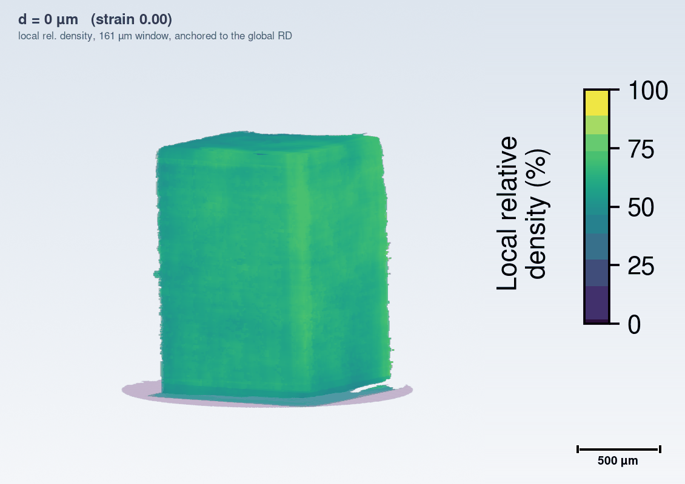
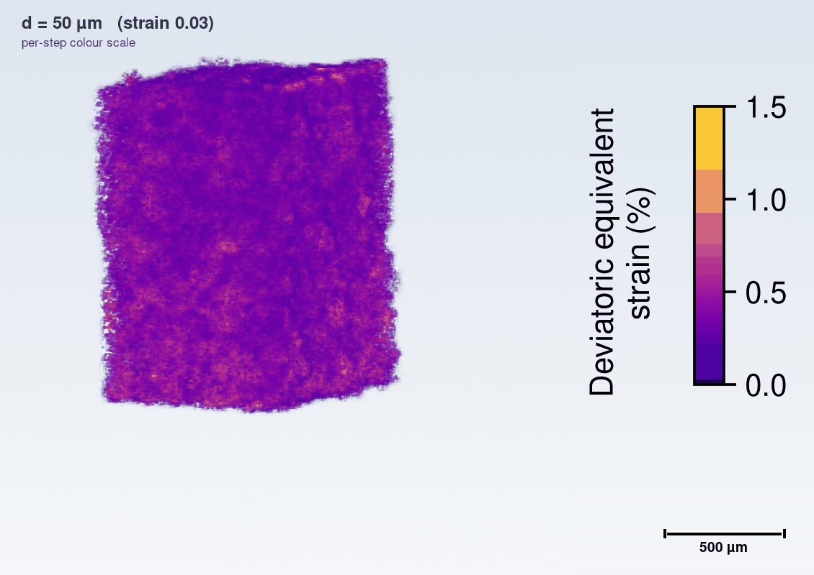

Röntgentomográfiás vizsgálatok
A TDK-ra benyújtott kutatásomban 316L rozsdamentes acélhab deformációs inhomogenitásait térképeztem fel összenyomás során. A mintát in-situ vizsgáltuk szerteágazó röntgendiffrakciós és -tomográfiás mérésekkel szinkrotron röntgensugárzás használatával. Ezen az oldalon a tomográfiás adatok kiértékelés eredményeként létrejött interaktív vizualizásciók tekinthetők meg.
A bemutatott vizualizásciók elkészítését Indrajeet Tambe (Malmöi Egyetem) végezte.
Lokális relatív sűrűség
A tomográfiás kiértékelés eredményeként kapott relatív sűrűség lokális alakulása a mintában. A deformáció előrehaladtával a relatív sűrűség globálisan nő, nagy deformációkra ebből a szögből kis mértékű lokalizáció figyelhető meg.

Deviátoros deformáció
Az alábbi ábrán a DVC analízisből kapott deformációs mező úgynevezett alaktorzító deformáció (deviatoric strain) komponensének térbeli eloszlása tekinthető meg skalárként ábrázolva az egyes deformációs lépésekre. A tengelyeken a minta méretei mikrométerben szerepelnek.
Az összenyomás a $z$ tengellyel párhuzamosan történt, a minta kiindulási mérete 1 mm $\times$ 1 mm $\times$ 1,5 mm volt.
A csúszka mozgatásával különböző deformáció értékekre tölthető be a deformációs térkép. A 3D ábrát forgatni, a méretét változatni az egérrel lehet.
Látható, hogy az inhomogenitások $40\%$ után válnak számottevővé. Ekkortól a minta egyik lapján lokalizálódik a deformáció.
A kezdeti állapotok esetleges inhomogenitásainak bemutatására adaptív színskálával mutatja a deviátoros deformáció értékét az alábbi animáció. Látható, hogy kezdetben is figyelhető meg minimális lokalizáció.
